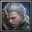

Player profile
kaneki-ken
Rank #8server.eurobattle.netSeason 2
Most played · 『Shadow』
Matches5424 wins · 30 losses
Win rate44%
Avg K / D / A41.7 / 36.1 / 10.1
Avg APM97
Avg damage dealt265.6k
Avg damage taken155.8k
Heroes played
Explore heroes →| HERO | MATCHES | WIN RATE | AVG K / D / A | AVG DMG |
|---|---|---|---|---|
『Shadow』Most played | 17 | 47% | 39.1 / 35.1 / 9.9 | 262.9k |
Dante スパーダの息子 | 6 | 33% | 40.2 / 38.0 / 11.7 | 276.2k |
Shadow | 3 | 33% | 47.3 / 34.3 / 10.3 | 281.1k |
黒鉄一輝 | 2 | 100% | 49.0 / 37.0 / 13.0 | 304.6k |
Zero (Rose) | 2 | 100% | 58.5 / 34.5 / 13.5 | 343.4k |
孫 悟飯 | 2 | 50% | 54.5 / 34.5 / 10.0 | 306.7k |
黒崎 一護 | 2 | 50% | 45.0 / 34.0 / 11.0 | 283.1k |
【Silver Arbiter】 | 2 | 0% | 41.5 / 41.0 / 5.5 | 210.7k |
ゴクウブラック | 1 | 100% | 48.0 / 26.0 / 11.0 | 273.8k |
Scion of the Flame | 1 | 100% | 40.0 / 37.0 / 9.0 | 267.3k |
藤原 妹紅 | 1 | 100% | 53.0 / 34.0 / 7.0 | 279.3k |
Seha Lee 2 | 1 | 100% | 46.0 / 29.0 / 13.0 | 270.8k |
【Joker】 | 1 | 100% | 51.0 / 32.0 / 7.0 | 292.9k |
Kenshiro | 1 | 100% | 31.0 / 41.0 / 17.0 | 250.6k |
Shirosaki | 1 | 100% | 23.0 / 45.0 / 20.0 | 254.2k |
Future トランクス | 1 | 0% | 26.0 / 36.0 / 4.0 | 176.2k |
不明なる共演者 | 1 | 0% | 38.0 / 34.0 / 7.0 | 246.3k |
『Codename 555-SB』 | 1 | 0% | 37.0 / 36.0 / 10.0 | 233.9k |
Mastered Ultra Instinct Powered | 1 | 0% | 29.0 / 35.0 / 2.0 | 173.9k |
 V バージルースパーダの息子 | 1 | 0% | 40.0 / 27.0 / 5.0 | 189.6k |
朱雀院 紅葉 | 1 | 0% | 58.0 / 33.0 / 6.0 | 296.7k |
Kケイ・ダッシュ | 1 | 0% | 37.0 / 39.0 / 9.0 | 222.8k |
竈門 炭治郎 | 1 | 0% | 34.0 / 44.0 / 15.0 | 318.3k |
blue KEZYO | 1 | 0% | 36.0 / 37.0 / 12.0 | 220.1k |
Aoi no Hono Senshi | 1 | 0% | 28.0 / 47.0 / 7.0 | 179.6k |
孫悟飯 | 1 | 0% | 52.0 / 48.0 / 10.0 | 326.6k |
Averages use recorded statistics only; unavailable historical values are shown as —.
Recent matches
Open a match for its scoreboard and kill matchups.
LOSS48:05
MCB #2000267
25 Nov 2026 · 00:02 WIB
26.0 / 36.0 / 4.0View match →
WIN55:14
MCB #2000266
24 Nov 2026 · 23:08 WIB
48.0 / 26.0 / 11.0View match →
LOSS59:39
MCB #2000262
24 Nov 2026 · 01:20 WIB
38.0 / 34.0 / 7.0View match →
LOSS56:06
MCB #2000261
24 Nov 2026 · 00:12 WIB
37.0 / 36.0 / 10.0View match →
WIN67:01
MCB #2000258
22 Nov 2026 · 22:23 WIB
34.0 / 36.0 / 6.0View match →
LOSS54:31
MCB #2000257
22 Nov 2026 · 20:57 WIB
29.0 / 35.0 / 2.0View match →
LOSS44:28
MCB #2000254
22 Nov 2026 · 17:05 WIB
40.0 / 27.0 / 5.0View match →
WIN63:57
MCB #2000253
22 Nov 2026 · 16:11 WIB
56.0 / 33.0 / 14.0View match →
LOSS60:54
MCB #1000081
21 Nov 2026 · 22:11 WIB
58.0 / 33.0 / 6.0View match →
WIN64:05
MCB #1000080
21 Nov 2026 · 21:02 WIB
42.0 / 41.0 / 12.0View match →